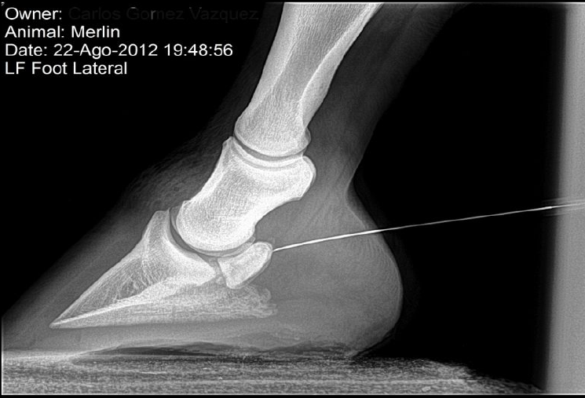
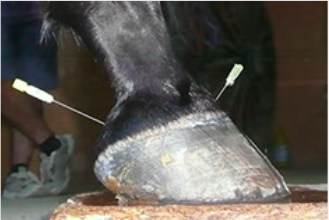

INFILTRACIONES
Y sus mitos
Infiltraciones y sus Mitos
Dr. Raúl Franco Ledesma
Infiltraciones en el Caballo de Deporte
La infiltración es uno de los actos médicos veterinarios que
genera más dudas y resistencias en los propietarios de caballos
a la hora de decidir el tratamiento que se va a emplear. Una infiltración significa la aplicación del medicamento en el sitio
preciso de la lesión, en vez de aplicarla por una vía general.
¿Qué ventajas e inconvenientes tienen las infiltraciones?
Ventajas:
Se potencian los efectos analgésicos o antiinflamatorios a diferencia de los tratamientos administrados de forma convencional. · Los efectos benéficos son más duraderos que los obtenidos con medicación sistémica.
Se evitan los efectos adversos producidos a nivel de estómago,
hígado, médula ósea, entre otros.
Se reduce en gran proporción la cantidad de medicación a
emplear.

Los tiempos de recuperación se aceleran, permitiendo así que
el caballo vuelva a su actividad en menor tiempo
Desventajas:
Riesgo de infección, que puede minimizarse empleando una
técnica aséptica rigurosa. Se presenta una dificultad en la técnica para abordar algunas articulaciones profundas.
Al administrar los fármacos por una vía general, ya sea inyectados a la vena, intramuscular o por la boca, éstos se absorben, se
metabolizan y se distribuyen por todo el organismo, llegando
en una cantidad diluida al órgano blanco que es donde se necesita que el medicamento ejerza su acción. Las infiltraciones son
una manera de colocar el medicamento en el lugar de la lesión,
logrando así una mayor concentración del fármaco en la zona
afectada.
¿En qué tipo de situación se realiza una infiltración?
Patologías articulares, inflamación de bursas tendinosas y patologías musculares principalmente
Dentro de las situaciones más frecuentes se encuentra la artrosis, la cual corresponde a una patología articular crónica y degenerativa. Muchos caballos de deporte desarrollan la enfermedad degenerativa articular desde temprana edad; sin embargo,
a medida que pasan los años, la probabilidad de desarrollar
problemas de este tipo ha incrementado notablemente.
En el tratamiento de la patología articular se pueden usar las siguientes herramientas:
- Antiinflamatorios no esteroideos, orales o inyectables, que van
a ser eficaces mientras sean administrados. Desgraciadamente
todos ellos tienen efectos adversos y su uso prolongado en el
tiempo, puede producir gastritis o úlceras, daño hepático, disminución en la producción de células sanguíneas y eventualmente daños renales. Por eso deben usarse de forma limitada.
- Los herrajes ortopédicos son una buena herramienta cuando
los problemas se sitúan en las partes más distales de la extremidad
- Los condroprotectores, son sustancias de origen natural que
nutren el cartílago y retrasan la evolución del proceso degenerativo.
- Por último, existen terapias alternativas, como homeopatía,
acupuntura, ozonoterapia, así como también terapias físicas,
como hidroterapia, láser, ultrasonido, onda de choque radial,
etc.

Con el uso de infiltraciones articulares se podría llegar a una
mantención de una o dos infiltraciones por año, generando un
pronóstico exitoso, de esta forma reducimos la probabilidad
de daños colaterales, convirtiéndose en la herramienta de mejores resultados al momento de elegir en una terapia articular.
Los tratamientos más modernos en la patología articular o tendinosa se basan en la infiltración de factores plasmáticos ricos
en plaquetas (PRP), células obtenidas de la médula ósea o con
suero autólogo condicionado (IRAP) ambos obtenidas del
propio paciente. La capacidad de regeneración del tejido lesionado es con estos tratamientos de mucha mejor calidad,
minimizando los riesgos de recaídas.
Otros procedimientos de Infiltraciones Derivados lodados que
generan un efecto rubefaciente moderado, atrayendo hacia la
zona lesionada un mayor aporte sanguíneo, de esta forma potenciando los mecanismos antiinflamatorios endógenos,
usados desde muchos años para procesos muy crónicos.
Las Infiltraciones Perineurales se encargan de desensibilizar las
regiones, cuando la patología es crónica. Se utilizan neurolíticos, que son sustancias que alteran moderadamente el nervio,
en su porción sensitiva, actuando a nivel de la mielina que lo
recubre, dificultando la transmisión de los impulsos y de esta
forma disminuyendo la sensibilidad.
El Bloqueo Regional Endovenoso, se logra después de aplicar
un torniquete en una zona distal de una extremidad. En este
se inyecta la medicación en la vena que drena dicha región,
impidiendo que éste se vaya de la zona, "empapando así la
región afectada con la medicación empleada durante el
tiempo que se mantenga el torniquete", con el fin de alcanzar
concentraciones muy altas de este medicamento que se ha
empleado en el tejido afectado.
Un mito generalizado es que la infiltración es algo nocivo por
definición.
La infiltración se usará cuando sea necesario, si la respuesta es
buena, pueden perfectamente no ser necesarias más infiltraciones, o plantearse un tratamiento de dos o tres en serie; después del reposo necesario, el caballo puede quedar curado
definitivamente. Su supresión es posible, sin generar efectos
negativos por ello. Se deben usar de forma moderada, tratando de combinarlas con el resto de las herramientas terapéuticas.
También es frecuente la opinión radical, totalmente contraria a
las infiltraciones. Alegando frases contundentes como "son
nocivas y finalmente dañamos al caballo". Esta filosofía tan
conservadora limita en muchas ocasiones las opciones de curación o uso del caballo, y en muchos casos, en la enfermedad
articular, gracias a las infiltraciones se logra que un caballo
pueda seguir realizando su actividad.
Un tema importante es el tipo de FÁRMACOS QUE SE USAN,
la dosis empleada y la frecuencia de las mismas. Algunas sustancias como el ácido Hialurónico, los glicosaminoglicanos o
los factores plaquetarios o medulares, son totalmente beneficiosos. No producen efectos adversos y solo aportan factores
de crecimiento, nutrientes, desinflamatorios, lubricantes y protectores del cartílago articular
Los fármacos denominados corticoides, clásicamente han sido
responsables de generar un beneficio de forma inmediata,
pero también una mayor erosión del cartílago a largo plazo.
Es por ello, que se usan muy eventualmente, acompañados
siempre de protectores como el ácido Hialurónico, en dosis
menores y siempre eligiendo el compuesto más adecuado.
Se debe contraindicar la terapia por infiltración cuando alrededor de la zona diana se encuentre algún tejido infectado.